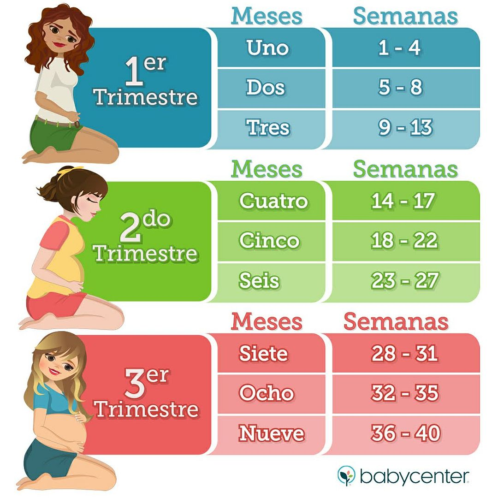

Todo sobre el embarazo, la lactancia y el recién nacido
El camino hacia la maternidad y la paternidad está lleno de emociones, preguntas y descubrimientos. Desde los primeros cambios del embarazo, pasando por la experiencia de la lactancia, hasta los cuidados del recién nacido, cada etapa trae sus propios desafíos y momentos inolvidables. En esta sección te brindamos información confiable, clara y actualizada para acompañarte paso a paso.
Aquí encontrarás recursos útiles sobre el desarrollo del bebé en el embarazo, consejos prácticos sobre lactancia materna o mixta, y una guía esencial para los primeros meses del bebé: desde el cuidado del cordón umbilical hasta los principales hitos de los primeros meses de vida. Nuestro objetivo es ayudarte a tomar decisiones informadas, ganar confianza y disfrutar más de cada momento.
Embarazo

Primer trimestre (semanas 1 a 12)
Durante el primer trimestre, comienzan a gestarse los cambios más importantes tanto en el cuerpo de la madre como en el desarrollo del bebé. Es común experimentar síntomas como náuseas, cansancio extremo, sensibilidad en los pechos o cambios de humor. Aunque pueden ser molestos, son señales normales del embarazo. En este período, el embrión se desarrolla rápidamente, formándose los órganos vitales y comenzando a latir el corazón alrededor de la sexta semana.
Es un buen momento para confirmar el embarazo con una visita al médico, iniciar controles prenatales y comenzar a tomar ácido fólico si aún no se ha hecho. Muchas mamás y papás también se enfrentan a dudas comunes: ¿qué alimentos evitar?, ¿es normal sentir miedo o ansiedad?, ¿cómo comunicar la noticia? Este trimestre está lleno de emociones, y buscar información y acompañamiento puede marcar la diferencia para vivirlo con más tranquilidad.
Consejos y recomendaciones:
Para la madre:
- Descansa todo lo que puedas. El cansancio es real y no es debilidad: tu cuerpo está trabajando el doble.
- Hidrátate bien y come pequeñas porciones durante el día para ayudar a controlar las náuseas.
- Evita automedicarte. Consulta siempre antes de tomar suplementos, hierbas o medicamentos.
- Si sientes tristeza constante o ansiedad, háblalo. La salud mental es tan importante como la física.
Para el padre o acompañante:
- Acompaña a las citas médicas si es posible. Estar presente fortalece el vínculo familiar desde el inicio.
- Infórmate también: leer sobre el embarazo no es solo cosa de mamás.
- Escucha con empatía y valida lo que siente tu pareja, incluso si no lo entiendes del todo.
- Pregunta: ¿cómo puedo ayudarte hoy? A veces lo más simple es lo más valioso.
Segundo Trimestre (semanas 13 a 26)
El segundo trimestre suele ser el más llevadero para muchas mujeres. Las náuseas tienden a disminuir, se recupera algo de energía y el cuerpo se adapta mejor al embarazo. Es también cuando el vientre comienza a notarse más y, hacia la mitad del trimestre, muchas madres sienten por primera vez los movimientos del bebé. En este período, el crecimiento fetal es notable: se desarrollan los sentidos, se fortalece el esqueleto y se forma el lanugo (una fina capa de vello).
A nivel médico, este trimestre incluye ecografías clave, como la morfológica, que evalúa el desarrollo del bebé en detalle. También pueden surgir dudas sobre el sexo del bebé, cómo elegir un nombre o qué cambios esperar en la vida familiar. Es una etapa ideal para preparar el entorno físico y emocional del hogar, y para que ambos padres se involucren activamente en este camino hacia la maternidad y la paternidad.
Consejos y recomendaciones:
Para la madre:
- Aprovecha este periodo de mayor energía para hacer ejercicio suave, como caminatas o yoga prenatal.
- Comienza a cuidar tu piel para prevenir estrías (aunque no todas se pueden evitar, la hidratación ayuda).
- Mantén tus controles al día y realiza los estudios indicados, como la ecografía morfológica.
- Habla con tu profesional sobre el plan de parto y cualquier miedo o duda que tengas.
Para el padre o acompañante:
- Participa en la elección de productos para el bebé, visitas médicas o decoración del cuarto.
- Ayuda a generar un entorno relajado y libre de estrés. El embarazo también se vive en casa.
- Comiencen juntos a hablar sobre la crianza, la lactancia y los roles que cada uno asumirá.
- Escucha activamente los cambios físicos y emocionales que está viviendo tu pareja. A veces no necesita soluciones, solo ser escuchada.
Tercer Trimestre (semanas 27 al parto)
En el tercer trimestre, el embarazo entra en su recta final. El cuerpo de la madre experimenta más peso, molestias en la espalda, dificultad para dormir o digestiones más lentas, mientras el bebé gana peso y se prepara para el nacimiento. Es común sentir una mezcla de ansiedad, ilusión y cansancio, por lo que es importante mantener una buena comunicación con el equipo médico y buscar apoyo emocional si es necesario.
Durante estas semanas, se recomienda asistir a clases de preparación para el parto, armar el bolso para el hospital y definir un plan de parto si así se desea. Muchas familias se preguntan cómo saber si están en trabajo de parto, qué sucede si se pasa la fecha probable de parto o cómo enfrentar el dolor. Este trimestre es una oportunidad para informarse, conectar con el bebé y prepararse para el gran momento del nacimiento y la llegada al puerperio.
Consejos y recomendaciones:
Para la madre:
- Practica técnicas de respiración, relajación o meditación. Te serán útiles para el parto y el postparto.
- Haz pausas durante el día para descansar, especialmente si trabajas fuera de casa.
- Prepara con tiempo la valija para el hospital o centro de parto y asegúrate de tener documentos importantes a mano.
- Habla con tu equipo médico sobre señales del trabajo de parto y cuándo acudir al hospital.
Para el padre o acompañante:
- Aprende a reconocer las señales del trabajo de parto junto a tu pareja. Podrás ayudar a actuar con calma y rapidez.
- Sé paciente si hay cambios de humor o molestias físicas. El cuerpo está en su máximo esfuerzo.
- Ten a mano contactos importantes (obstetra, centro de salud, transporte) y ofrece tranquilidad.
- Planea también tus tiempos de licencia o disponibilidad. Estar presente no solo es útil: es necesario y muy valorado.
El Parto
El parto es uno de los momentos más importantes y significativos en la vida de una familia. Aunque cada nacimiento es único, contar con información clara y preparación emocional puede marcar la diferencia en cómo se vive esta experiencia. A continuación, te compartimos todo lo que necesitás saber sobre este gran momento, desde cuándo acudir al hospital hasta la primera hora de vida de tu bebé.
¿Cómo saber cuándo acudir al hospital?
Uno de los grandes temores de muchas mamás y papás es no saber cuándo es el momento correcto para ir al hospital. Estos son algunos signos importantes que indican que el trabajo de parto podría haber comenzado:
Contracciones regulares y dolorosas, que no ceden con el reposo. Una guía común es la regla del 5-1-1: contracciones cada 5 minutos, de 1 minuto de duración, durante al menos 1 hora.
Pérdida del tapón mucoso, que puede verse como un flujo espeso, a veces con sangre.
Rotura de bolsa (ruptura de membranas): puede ser un gran chorro de líquido o un goteo constante.
Sangrado vaginal activo (más que un leve manchado): en este caso, acudí al hospital de inmediato.
Disminución de movimientos del bebé: si notás que tu bebé se mueve mucho menos, no esperes. Consultá urgente.
Siempre que tengas dudas o sientas que “algo no está bien”, es mejor consultar. Nadie mejor que vos para sentir si algo cambió.
Lista de infaltables para el hospital
Tener el bolso listo con anticipación te da tranquilidad. Se recomienda prepararlo desde la semana 36, tanto para la persona gestante como para el bebé y el/la acompañante. Aquí una lista práctica:
Para la madre:
- Documentos personales, estudios y plan de parto (si tenés uno).
- Camisones o pijamas cómodos que se abran adelante para facilitar la lactancia.
- Ropa interior cómoda y de algodón (incluir bragas posparto y sotenes de lactancia).
- Pantuflas o chinelas, elementos de higiene personal (cepillo, shampoo, toallas, etc.).
- Compresas femeninas tipo postparto.
- Cargador de celular y algo que te relaje (música, spray, pelotita, etc.).
Para el bebé:
- 2 o 3 mudas completas (enteritos, bodies, gorrito, medias).
- Manta o arrullo suave.
- Pañales recién nacido, toallitas húmedas, crema para la zona del pañal.
- Ropa para salir del hospital, según el clima.
Para la pareja o acompañante:
- Ropa cómoda y abrigo.
- Snacks, botella de agua y elementos de higiene personal.
- Teléfono cargado, cámara si lo desea, y mucha paciencia y amor para acompañar el proceso.
El parto y el alumbramiento: ¿qué esperar?
El parto puede dividirse en tres etapas principales:
Dilatación: es la etapa más larga, donde el cuello del útero se abre hasta alcanzar los 10 cm. Puede llevar varias horas, especialmente en madres primerizas. Las contracciones se vuelven más frecuentes e intensas.
Expulsivo: comienza cuando ya hay dilatación completa y el bebé está listo para nacer. Es el momento de pujar, guiada por tu cuerpo o tu equipo médico.
Alumbramiento: una vez que nace el bebé, se produce la expulsión de la placenta. Es una fase muchas veces olvidada, pero muy importante. Se deben revisar que la placenta esté completa y controlar posibles hemorragias.
Cada parto es diferente. Puede ser vaginal, con o sin intervenciones, o cesárea. Lo más importante es que la experiencia sea segura, respetada y acompañada.
La hora de oro: ¿Por qué debe respetarse?
La hora de oro es la primera hora de vida del bebé, un momento único que debería vivirse sin interrupciones y con el mayor respeto posible. El contacto piel con piel inmediato entre el recién nacido y su madre, o en su defecto con el otro progenitor, no solo es un acto de amor, sino también una necesidad fisiológica.
Durante esta hora, el cuerpo del bebé comienza a adaptarse al mundo exterior, y el contacto directo ayuda a regular su temperatura, frecuencia cardíaca y respiración, además de calmarlo y reducir el llanto. También es el momento en el que el instinto de búsqueda del pecho se activa: el bebé reconoce el olor, el calor y los latidos que ya conoce desde el útero, y de forma natural suele prenderse al pecho, iniciando así una lactancia exitosa desde el comienzo.
Además, este contacto promueve la liberación de oxitocina, una hormona clave tanto para el vínculo afectivo como para la contracción uterina en la madre. Por todo esto, es fundamental que esta hora se respete sin apuros, evitando interrupciones como pesar, bañar o vestir al bebé, salvo que haya una necesidad médica urgente. Incluso en partos por cesárea, es posible facilitar este momento lo antes posible.
Respetar la hora de oro es respetar el comienzo de una nueva vida, y también el derecho de la familia a un nacimiento humanizado y consciente.